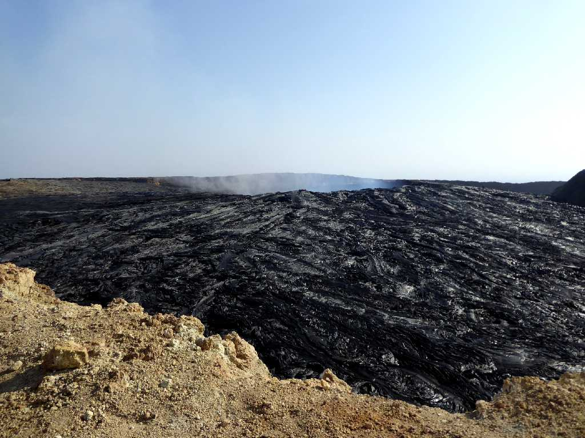
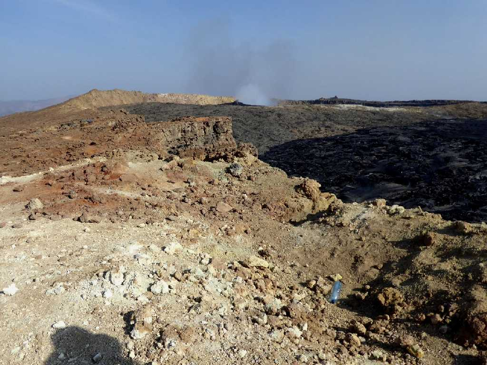
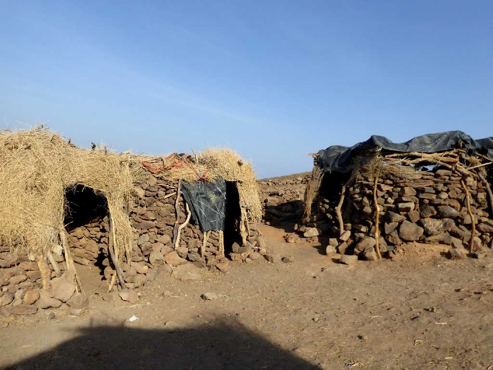
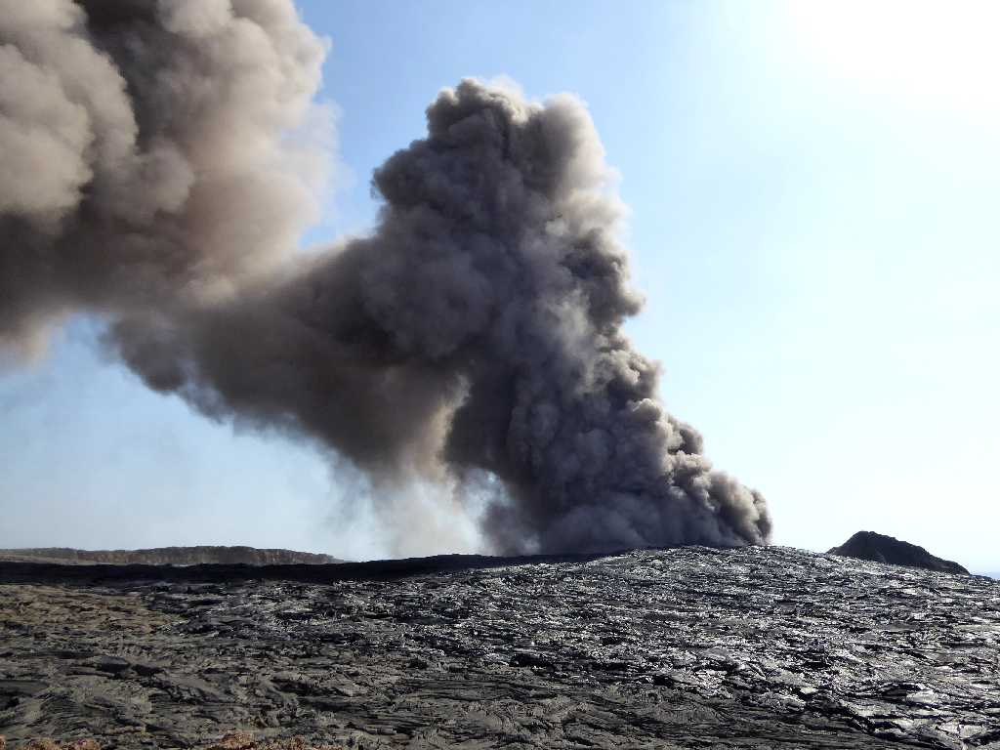
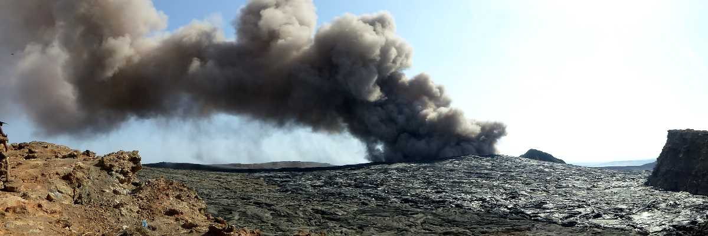
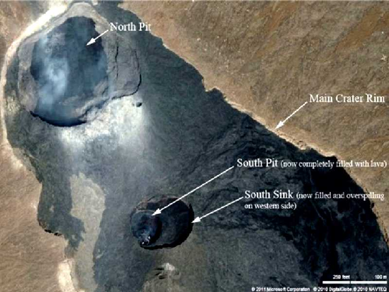
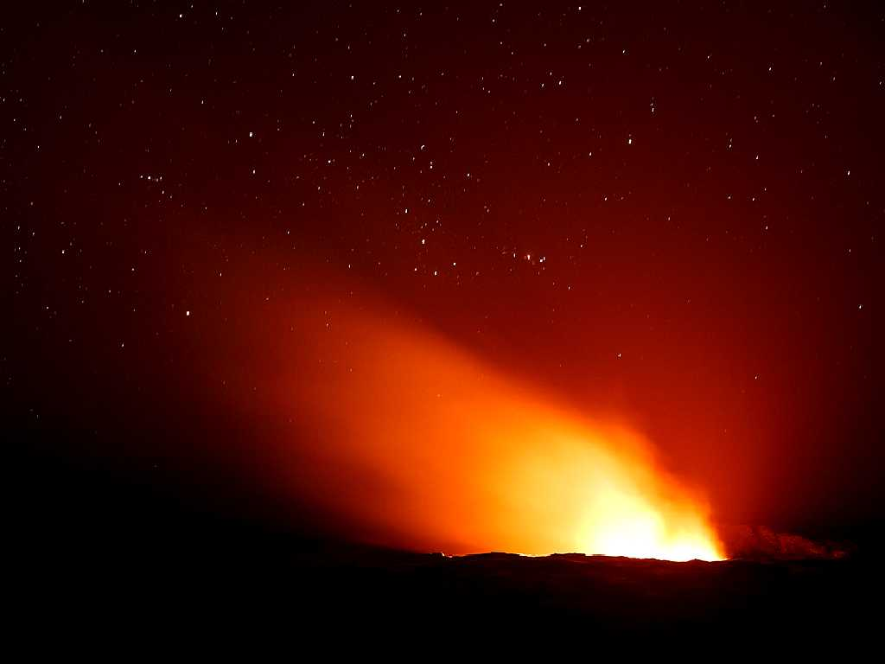
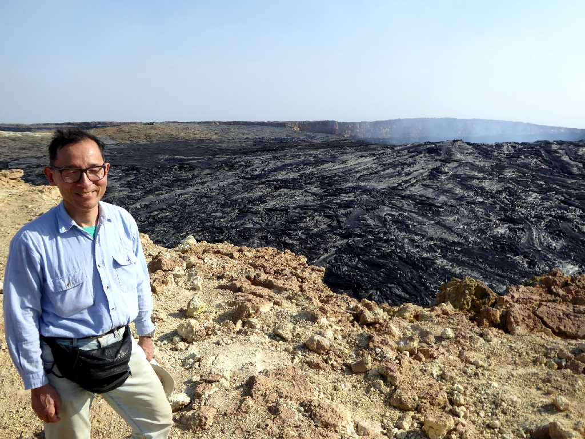

South Pit Crater Erta Ale Volcano
世界一低い活火山と云われる標高６１３ｍのエルタアレ火山の南火口にある真新しい溶岩 ガイドが半月前に訪れたときの形状と大きく変わっているので驚いていました →



North Pit Crater Erta Ale Volcano
僅かな噴煙を上げるエルタアレ火山の北火口

Crater Camp Erta Ale Volcano
火口にあるキャンプ

Smoke Rising South Pit Crater Erta Ale Volcano
ドンと火山性地震が起こりシュルシュルと溶岩の吹き出す音が聞こえ南火口から噴煙が上がった

Smoke Rising South Pit Crater Erta Ale Volcano
更に大きな噴煙が上がり始めたので下山命令が出て夜の火山活動状況を観れず早々に下山

Erta Ale Volcano

Erta Ale Volcano
火口から１２ｋｍ地点のベースキャンプからエルタアレ火山を望む

Campsite Erta Ale Volcano
エルタアレ火山のベースキャンプから火山活動が確認された

Campsite Erta Ale Volcano
ベースキャンプは冬でも暑く簡易ベッドを外に出して満天の星を観ながら就寝

January 22 2017 Crater Erta Ale Volcano